Массив — структура данных для хранения и манипулирования коллекцией индексированных значений. Используются для хранения упорядоченных коллекций данных, например списка курортов, товаров, клиентов в отеле и т. п.
Синтаксис для создания нового массива — квадратные скобки [] со списком элементов разделенных запятыми. В массиве может храниться любое число элементов любого типа.
// Пустой массив
const arr = [];
// Массив clients с тремя элементами
const clients = ['Mango', 'Poly', 'Ajax'];
console.log(clients); // ["Mango", "Poly", "Ajax"]
В качестве ключей-индексов используются цифры, индексация начинается с нуля.
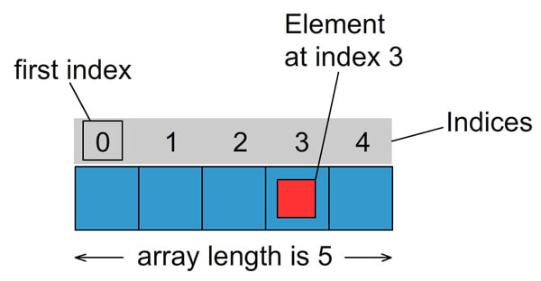Чтобы получить нужный элемент из массива, после имени переменной которая содержит массив, указывается индекс элемента в квадратных скобках. На место такого выражения будет подставлено значение хранящееся в элементе массива.
const clients = ['Mango', 'Poly', 'Ajax'];
// Указывая в скобках индекс элемента мы получаем его значение
console.log(clients[0]); // Mango
console.log(clients[1]); // Poly
console.log(clients[2]); // Ajax
Элементы массива можно заменять и добавлять, обращаясь к элементу массива по индексу.
const clients = ['Mango', 'Poly', 'Ajax'];
// Значение элемента можно заменить
clients[0] = 'Kiwi';
console.log(clients[0]); // Kiwi
// Или добавить
clients[3] = 'Alex';
console.log(clients[3]); // Alex
console.log(clients); // ["Kiwi", "Poly", "Ajax", "Alex"]
Длина массива динамическая величина и изменяется автоматически при добавлении или удалении элементов. Текущее число элементов массива содержится в его свойстве length.
Свойство length можно изменять напрямую.
Для итерации по массиву или перебора массива, используются циклы, в частности цикл for. Переберем массив клиентов и выведем их имена.
const clients = ['Mango', 'Ajax', 'Poly'];
for (let i = 0; i < clients.length; i += 1) {
console.log('Logging clients: ', clients[i]);
}
С помощью цикла массив можно заполнить данными.
const numbers = [];
for (let i = 0; i < 3; i += 1) {
numbers.push(`label-${i}`);
}
console.log('numbers: ', numbers); // ['label-0', 'label-1', 'label-2']
Инструкия for...of создает цикл, перебирающий итерируемые объекты, такие как массивы и строки. Тело цикла будет выполняться для значения каждого отдельного элемента. Это хорошая замена циклу for если не нужен доступ к счетчику итерации.
for (const variable of iterable) {
// statement
}
// Итерация по массиву
const clients = ['Mango', 'Ajax', 'Poly'];
for (const client of clients) {
console.log(client);
}
// Итерация по строке
const string = 'javascript';
for (const character of string) {
console.log(character);
}
Будем искать имя клиента в массиве имен, если нашли прервем цикл так как нет смысла искать дальше, имена у нас уникальные.
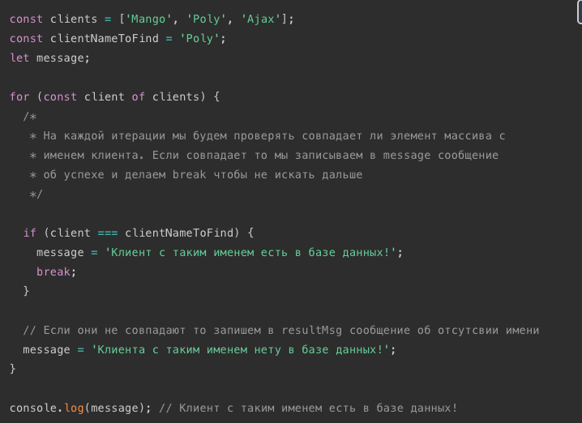Можно изначально задать message значение неудачи поиска, а в цикле перезаписать его на успех если нашли имя. Но break всеравно пригодится, так как если у нас массив из 10000 клиентов а нужный нам стоит на позиции 2, то нет абсолютно никакого смысла перебирать оставшиеся 9998 элементов.
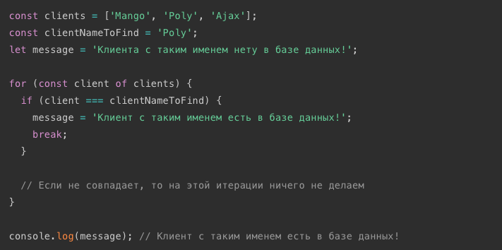Используем цикл для вывода только чисел больше определенного значения.
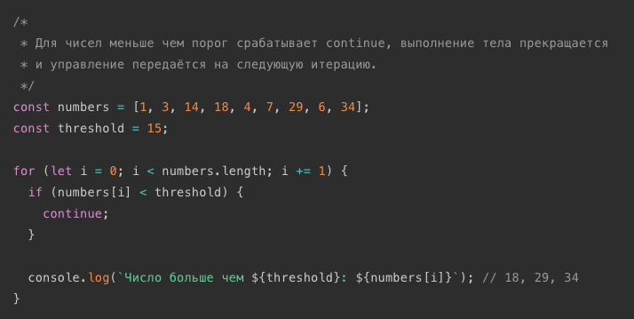Массивы могут содержать другие массивы как элементы. Это можно использовать для создания матриц.
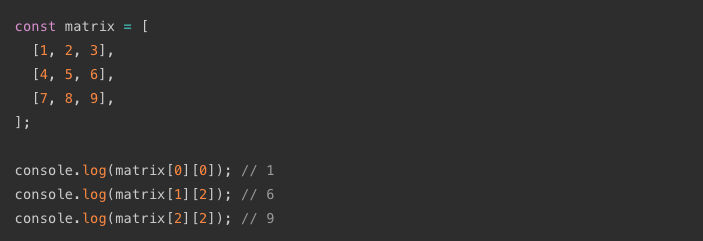Для того чтобы перебрать такой массив используются вложенные циклы.
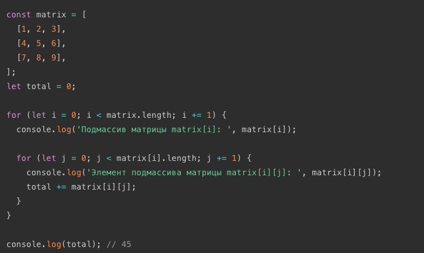Фундаментальным отличием сложных типов от примитивов, является то, как они хранятся и копируются.
Примитивы: строки, числа, були,null и undefined, при присваивании копируются целиком, по значению (by value).
Со сложными типами всё не так. В переменной, которой присвоен массив или объект, хранится не само значение, а адрес его места в памяти, иными словами — ссылка (указатель) на него, и передаются они по ссылке (by reference).
Представим переменную в виде листа бумаги. Значение этой переменной мы представим в виде записи на этом листе.

Если мы захотим сообщить содержимое этой записи пользователям то мы можем поступить так — сделать физические копии и вручить их каждому, то есть сделать множественные независимые копии (присвоение по значению).

Или поместить лист в закрытой комнате и дать пользователям ключ от этой комнаты, то есть 1 экземпляр с общим доступом (присвоение по ссылке).

Теперь изменим данные на листе бумаги, значение переменной. Очевидно, что посетители комнаты всегда будут видеть изменения которые мы вносим, так как изменяется оригинал и они имеют доступ к нему доступ. И также очевидно, что владельцы бумажных копий не заметят изменений глядя на свои копии.

При передаче по значению, переменным выделяется новая ячейка памяти и в нее копируется данные. Аналогия с множественными копиями бумажного листа имеет вполне реальное воплощение, отдельный лист для каждой копии.
При передаче по ссылке, вместо создания нового объекта, переменной присваивается ссылка (указатель) на уже существующий объект, то есть на его место в памяти. Таким образом несколько переменных могут указывать на один и тот же объект, по аналогии с закрытой комнатой, у них есть ключ доступа к оригиналу листа.
Все примитивные типы присваиваются по значению, то есть создается копия. 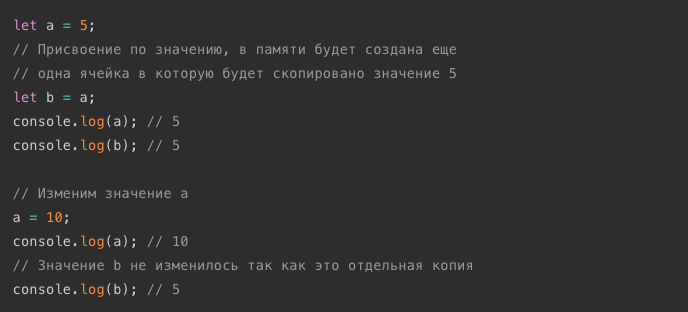Сложные типы - объекты, массивы, функции присваиваются по ссылке, то есть переменная просто получает ссылку на уже существующий объект.
split(s) — позволяет превратить строку в массив, разбив ее по разделителю s. Это не метод массива, но рассматриваем мы его сейчас так как раньше мы о массивах не знали.
join(s) — делает в точности противоположное split. Он берет массив и склеивает его в строку, используя s как разделитель.
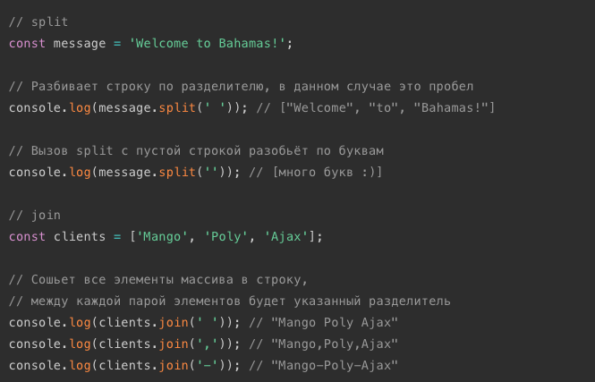array.indexOf(x) — возвращает первый индекс, в котором элемент x был найден в массиве, или число -1, если такого элемента нет. Используйте indexOf тогда, когда необходимо получить непосредсвенно индекс элемента.
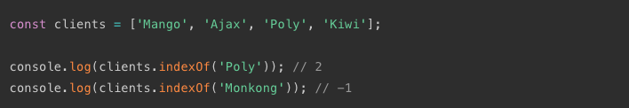array.includes(x) — определяет, содержит ли массив некоторый элемент x, возвращая true или false соответственно. Используйте includes тогда, когда необходимо проверить есть ли элемент в массиве и не важен его порядковый номер.
На первый взгляд пример ниже выглядит вполне хорошо. Однако, что если у нас будет больше красных фруктов, к примеру ещё вишня (cherry) или клюква (cranberries)? Будем ли мы расширять условие с помощью дополнительных ||?
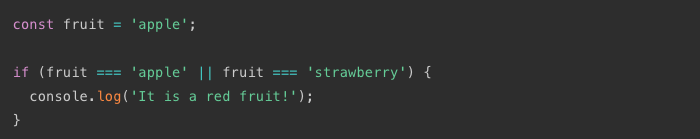Можем переписать условие, с использованием Array.includes, это очень просто и масштабируемо.
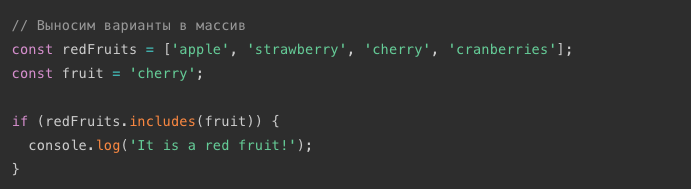